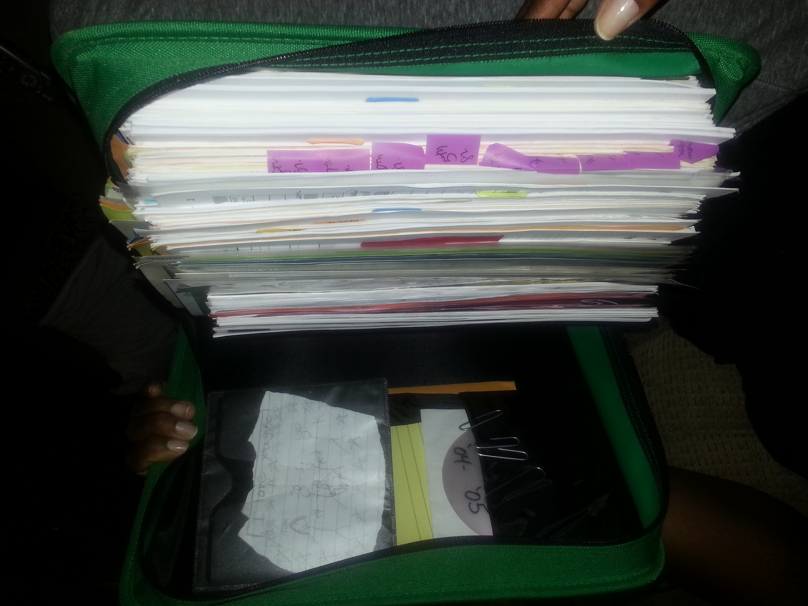

Problem and Solution Overview
|  | Individualized Education Programs (IEPs) were created in an effort to ensure special education students received appropriate accommodations and measurable goals to work towards during their educational careers. The potential for IEPs to be helpful and instructive documents collaborated on by parents, teachers, and students, is more often than not lost in the difficulty of tracking goal progress and miscommunication between stakeholders. To address this critical needs area in education we propose an IEP data collection app for teachers to be synced with a parent/teacher web portal to create clear channels for purposeful and accurate communication. |
Design Process
 |
|
IEP-Connect Video
IEP-Connect Classroom Demo
IEP-Connect: App Tracker Focus: Timely data collection aide for teachers Teachers with tablet access are able to track IEP goals in a systematic way using IEP-Connect. With this app teachers don’t need to worry about remembering on which piece of paper they wrote down an incident of goal progress, they can simply click to the student profile and quickly record this information in real time. With regular app usage, the growth of information to share and analyze between parents and teachers concerning IEP progress is guaranteed to increase |
IEP-Connect: Parent Portal
With the IEP-Connect web portal, parents no longer have to track-down teachers in order to receive updates on their child’s progress. The parent view of the web portal syncs directly with the IEP-Connect Classroom Tracker providing real time updates to parents. Parents can see recent scores and provided accommodations in the context of the child’s progress history. Additionally, the data is provided at varying levels of granularity from progress symbols to percentage of goal completed to the specific scores of a recent assessment. The web portal also fosters open communication between all members of the IEP group by providing an interface to converse with the IEP team. The conversations are tagged with their topic allowing the conversations to be filtered by category allowing quick updates on IEP topics, and ensuring valuable information in conversations can be found later.
Meet the IEP-Connect Team
 |
 |
 |
|
Lane |
Kristen |
Jessica |
Monique |